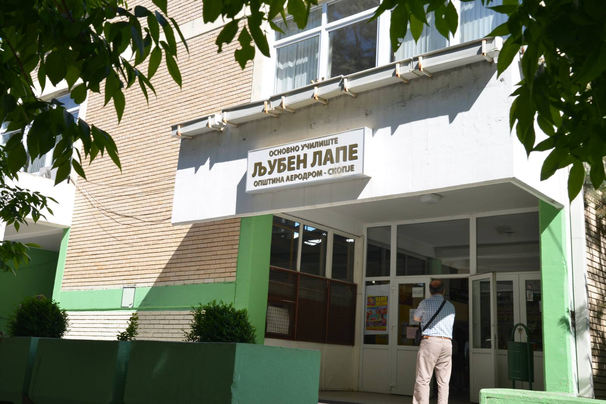
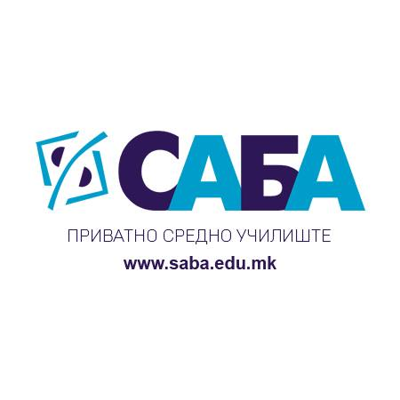
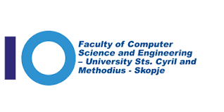

I completed my primary education at the primary school "Ljuben Lape" in Aerodrom, Skopje. I completed all 9 years as
an exemplary student with excellent results. I also participated in several math competitions - kangaroo, one year
I also participated in a chemistry competition. I gained great knowledge in Ljuben Lape, and as confirmation of that
is the fact that one year the school was declared as the best elementary school in Macedonia.

I completed high school at the private vocational school "SABA" in the field of informatics. I completed all 4 years
with excellent success. During this period, I participated in a math competition - kangaroo. The school gave me an
internship in several IT companies in Skopje, as well as an internship abroad. Here I acquired the basic knowledge
of some programming languages. The teaching was of high quality and took place according to the Finnish model of teaching.

I have currently completed my first year of studies at the "FINKI" faculty. Characteristic and unusual in this year
was that the teaching as well as the special way of taking the exams were online with special protocols.
The "FINKI" faculty, which belongs to the "St. Cyril and Methodius" university, is the most prestigious place for education.
in the field of information technologies in Macedonia.
